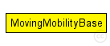
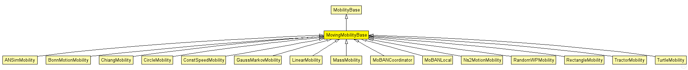

This documentation is released under the Creative Commons license
This documentation is released under the Creative Commons licenseAbstract base module for mobility models.
Author: Andras Varga
The following diagram shows usage relationships between types. Unresolved types are missing from the diagram. Click here to see the full picture.
The following diagram shows inheritance relationships for this type. Unresolved types are missing from the diagram. Click here to see the full picture.
| Name | Type | Description |
|---|---|---|
| MobilityBase | simple module |
Abstract base module for mobility models. |
| Name | Type | Description |
|---|---|---|
| ANSimMobility | simple module |
Uses the <position_change> elements of the ANSim tool's trace file. |
| BonnMotionMobility | simple module |
Uses the native file format of BonnMotion (http://www.cs.uni-bonn.de/IV/BonnMotion/). |
| ChiangMobility | simple module |
Uses a probabilistic transition matrix to change the state of motion. In this model, the state of the mobile node in each direction (x and y) can be: |
| CircleMobility | simple module |
Moves the node around a circle. |
| ConstSpeedMobility | simple module |
Controls all movement related things of a host |
| GaussMarkovMobility | simple module |
Uses a Gauss-Markov model to control the randomness in the movement. Totally random walk (Brownian motion) is obtained by setting alpha=0, while alpha=1 results a linear motion. |
| LinearMobility | simple module |
This is a linear mobility model with speed, angle and acceleration parameters. Angle only changes when the mobile node hits a wall: then it reflects off the wall at the same angle. |
| MassMobility | simple module |
This is a random mobility model for a mobile host with a mass. It is the one used in "Optimized Smooth Handoffs in Mobile IP" by Perkins &Wang. |
| MoBANCoordinator | simple module |
This is the coordinator module of the MoBAN mobility model. It should be instantiated in the top level simulation network in MiXiM, once per WBAN. The coordinator module is the main module that provides the group mobility and correlation between nodes in a WBAN. In the initialization phase, it reads three user defined input files which are the postures specification file, a configuration file which includes all required parameter for specific distributions, and the previously logged mobility pattern, if it is requested to use a logged pattern. Note that all WBAN instances may use the same input files if they are exactly in the same situation. |
| MoBANLocal | simple module |
This is the local mobility module of MoBAN. It should be instantiated in each node that belongs to a WBAN. The NED parameter "coordinatorIndex" determine to which WBAN (MoBANCoordinator) it belongs. The current implementation uses the Random Walk Mobility Model (RWMM) for individual (local) movement with a sphere around the node, with given speed and sphere radius of the current posture. The reference point of the node it the current posture, the sphere radius, and the speed is given by the corresponding coordinator. RWMM determines the location of node at ant time relative to the given reference point. |
| Ns2MotionMobility | simple module |
TODO: why does this comment refer to BonnMotion instead of NS2? |
| RandomWPMobility | simple module |
Random Waypoint mobility model. |
| RectangleMobility | simple module |
Moves the node around a rectangle. |
| TractorMobility | simple module |
Moves a tractor through a field with a certain amount of rows. Since the tractor also moves around the field, the tractor travels the number of rows PLUS one rows. Consider the following piece of ascii-art for rows=2. |
| TurtleMobility | simple module |
A LOGO-style movement model, with the script coming from XML. It can be useful for describing random as well as deterministic scenarios. |
| Name | Type | Default value | Description |
|---|---|---|---|
| debug | bool | false | |
| constraintAreaMinX | double | -1m/0 |
min x position of the constraint area, unconstrained by default (negative infinity) |
| constraintAreaMinY | double | -1m/0 |
min y position of the constraint area, unconstrained by default (negative infinity) |
| constraintAreaMinZ | double | -1m/0 |
min z position of the constraint area, unconstrained by default (negative infinity) |
| constraintAreaMaxX | double | 1m/0 |
max x position of the constraint area, unconstrained by default (positive infinity) |
| constraintAreaMaxY | double | 1m/0 |
max y position of the constraint area, unconstrained by default (positive infinity) |
| constraintAreaMaxZ | double | 1m/0 |
max z position of the constraint area, unconstrained by default (positive infinity) |
| updateInterval | double | 0.1s |
the simulation time interval used to regularly signal mobility state changes and update the display |
| Name | Value | Description |
|---|---|---|
| display | i=block/cogwheel |
// // Abstract base module for mobility models. // // @author Andras Varga // simple MovingMobilityBase extends MobilityBase { parameters: double updateInterval @unit(s) = default(0.1s); // the simulation time interval used to regularly signal mobility state changes and update the display }
This documentation is released under the Creative Commons license